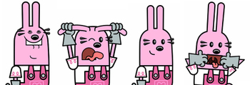

A very popular magazine in the Metro New York area called Time Out New York Kid's featured a sidebar about Wubbzy and the Wubbcast in their May/June issue. Keep your eyes peeled, as the Wubbcast is soon to be launched on a regular basis! See the article here: Download TONYKids_050606.pdf

« March 2006 | Main | May 2006 »
It's the Little Things

beautiful Wuzzleburg at night
So the funny thing about animation is that every little thing needs to be created from scratch. The characters, anything the characters interact with, the settings, the sound. Everything! And believe it or not, it can take a whole team to design these things. We have background artists, who make the backgrounds and environments, prop artists, who make any kind of item that a character interacts with, character designers, and effects artists. Everything from a cloud of dust, to a splash, to even a tooth gleam has to be created as an effect. Taken as a whole, sometimes it's easy not to notice these things. You just so happen to be special enough to have the all-access pass to Wuzzleburg. That means that you get to see these things individually and admire them for their unique and individual beauty. A lot of work goes into these "little things". So let's all say thanks to these incredible artists.
Thanks
- Carrie

everyday residents of Wuzzleburg: a policeman and alien

a tooth gleam, a splash, and a dust cloud
pickles and mulligan stew!
Avast Me Wubbies!

When you ask most young kids what they want to be when they grow up, what do they usually say? Fireman? Policeman? Teacher? Well, growing up, I always wanted to be a pirate! OK, so I picked a career that's about 200 years out of date. While I still ache to climb the rigging on a ship, working in animation is a reasonable facsimile to being a pirate... When the two worlds collide? Well, nothing's better than that! So when I saw that Episode 14 of Wow! Wow! Wubbzy! was called "Pirate Treasure" I said to myself... "Self, this couldn't get any better!" So here are some great pictures of Wubbzy, Widget and Walden ready for their pirate journey. - Carrie
Wubbzy Gear

Well, you've heard talk of some of the great Wow! Wow! Wubbzy! swag that the production team gets. Here's a peak. With the help of the awesome team at Kick Design, our fearless leaders at Bolder Media created the official Wubbzy messenger bag and hat exclusively for the W!W!W! team. Thanks both to Kick and especially to Susan and Fred for the great bag and hats! - Carrie
You're A Star!

What's this thing? This is a thumbnail color board. This one in particular is for the song "You're a Star". The team uses the thumbnail color board in order to get a quick snapshot of how the color will work from scene to scene and to help create a cohesive overall feel for each song. Click on the link below and listen to the song while you look at the board above. You'll get the feel for the whole video! - Carrie
Download Star_Sketch4.mp3
No Laughing Matter

Have you ever tried really really hard not to laugh? And the harder you tried, the funnier things got? Well, Wubbzy, Widget and Walden can all sympathize with you. They had a no laughing contest. As you can see... the results were not pretty. But they were pretty darn funny! - Carrie
